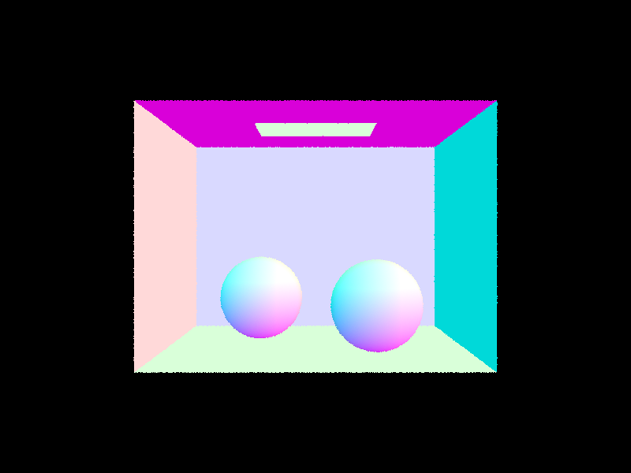
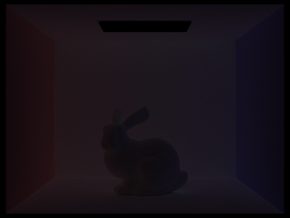

Overview
In this homework, I worked through creating a render using a pathtracing algorithm via implementations of methods and functions
that were discussed in lecture and discussion including ray-scene intersections, acceleration methods, and physically based light modeling
procedures. Below is a, hopefully, comprehensive summary of the implemented methods/functions along with images demonstrating
the end result of these operations.
Part 1: Ray Generation and Scene Intersection (20 Points)
Ray Generation
Ray generation was part of Task 1 of Part 1 and it can be broken down into 3 major components as outlined in the spec:
-
Transforming the image coordinates to camera space.
-
Generating the ray in the camera space.
-
Transforming the ray into world space.
The first step in this process involved mapping the image coordinates to camera space and in my case, this included drawing out a diagram
to calculate the relative offsets in order to get the proper x, y coordinates in the camera space. Upon completing this process and
getting back a Vector3D instance representing the coordinates in camera space, the second step in this process followed. Given that the ray
originated from the camera at a position of (0, 0, 0), this meant that the coordinate point we calculated previously would essentially be
the point that our ray would go through in camera space and therefore represent our ray direction. Lastly, we had to ensure to transform the
ray into world space and this was easy to do given that we had a rotation matrix "c2w" available to us. Given that the points were normalized in
the camera space, we also had to ensure that the coordinates representing the direction of our ray were normalized as well.
Primitive Intersection
For primitive intersection we had to successfully implement both:
-
Ray-triangle intersection
-
Ray-sphere intersection
For ray-triangle intersection, the process was very similar to the Möller-Trumbore algorithm covered in discussion 5 which effectively combined
knowledge about barycentric coordinates, to conduct a point in triangle test, along with Cramer's rule to test whether the intersection value,
given by t, was within the bounds specified by our ray. More details regarding my implementation of the triangle intersection
algorithm will be provided shortly in the following section under "Triangle Intersection Algorithm." For ray-sphere intersection, the
process was very similar to what was discussed in Lecture 9: Slide 21. In short, this included calculating some coefficients a, b, and c
by plugging in the ray equation into the sphere equation and recognizing that this new equation resembled a quadratic equation. Using these
coefficients, I then solved for the intersection value, t, by using the quadratic formula.
-
A quick caveat on this was ensuring that the intersection value t, is in fact real, and so to ensure this was the case,
I would only proceed with solving for t via the quadratic formula if the discriminant given a, b, and c was greater or equal to 0.
It is also important to mention because of the squared nature of this equation, there was a possibility there there would be 2 possible values
for t and to workaround this, I had to ensure whether either value of these 2 values of t fell within the bounds specified by our way. If this
was the case, then as the spec outlined, we would take the smaller of these two values to be our true intersection value t.
Triangle Intersection Algorithm
As touched on above, my triangle intersection algorithm closely resembled what was discussed in discussion 5 with regards to the Möller-Trumbore algorithm.
In my case, I solved for the barycentric coordinates b0, b1, b2 and the intersection value, t, by solving
a system of vector equations which then was further reduced down to calculating a fair amount of determinants and dot products. Upon calculating t,
there were a lot of checks I had to do to determine whether:
-
The intersection value, t, was valid (by making sure it was within the bounds outlined by the ray).
-
Making sure our barycentric coordinates greater or equal to 0 and added up to 1.
If the above checks resulted true, then we found a valid intersection and we would have to then go through and update the max bound
of our ray to be this newly found intersection, as well as update the intersection structure with:
-
The newly found intersection value.
-
The surface normal at the intersection.
-
The primitive points.
-
The bdsf points.
Images with normal shading!
|

These are some nice smooth spheres!
|
 Woah the spheres now have triangular patterns on the surface!
Woah the spheres now have triangular patterns on the surface!
|
Woah, what a neat coil!
Part 2: Bounding Volume Hierarchy (20 Points)
BVH construction algorithm with splitting point heuristic explanation.
In order to begin talking about my BVH construction algorithm, it is important to first mention the heuristic I chose
for splitting up the boundary box into left and right partitions. For this, I ultimately decided on following an average
centroids along an axis of interest approach where I first had to isolate the axis which would be the so called "splitting axis."
For this, I decided to use the extent field of the original bounding box in the current recursive call and take the maximum
of the three values, recall extent is itself an instance of a Vector3D specified as a (X, Y, Z) point in space, to be the axis
of interest as this was the axis that had the highest variance and told us the most information about the geometry of the
bounding box.
After successfully isolating the axis of interest, I then created a Vector3D(0, 0, 0) instance and this would be for holding the
sum of the centroids of all the objects present in our current bounding box. Afteward, I went through every object in the bounding
box and for every object, I:
-
Got the bounding box encompassing the object.
-
I got the centroid point of the aforementioned bounding box.
-
I added the centroid point to the Vector3D instance mentioned above which serves as a running sum of centroids.
After completing this step, I averaged out the running sum of centroids by dividing by the number of objects we iterated through and finally
I used the axis of interest, calculated above, and took the average centroid at that axis to serve as the "boundary" so that any objects
with a centroid value, at the particular index, LESS THAN OR EQUAL TO this average value fell into the left side of our box and all other objects
would wind up on the right partition of our bounding box.
After doing this, I then went through and reordered all of our objects in memory for two reasons:
-
To ensure that the order was preserved in memory so that the partitions are correct under the assumption of correct recursive calls.
-
To find the "boundary" for our recursive call such that we iterate through the left partition and then the right partition afterward.
Show images with normal shading for a few large .dae files that you can only render with BVH acceleration.
|
Woah!
|
 This looks like a statue!
This looks like a statue!
|
This cow slays!
Compare rendering times on a few scenes with moderately complex geometries with and without BVH acceleration. Present your results in a one-paragraph analysis.
After doing analysis on the renderings of both cow.dae and maxplanck.dae, it is very clear to see the advantages that BVH acceleration presents us with.
For starters, when rendering cow.dae WITHOUT BVH acceleration, it took me roughly 6.28 seconds to finish rendering. Not only that, however, as I
also noticed that there were roughly 1599 intersections per ray which seems like a quite a lot. In comparison, when rendering the same cow.dae
WITH BVH acceleration, the time to render was dramatically cut down, down to 0.05 seconds! When comparing the number of intersections per ray as well,
I also noticed that WITH BVH accleration, we went from roughly 1599 intersections per ray down to only 11 intersections per ray. I went ahead and
tested this out with the maxplanck.dae as well and I also saw a very similar pattern emerge, where WITHOUT BVH acceleration our rendering runtime was about
57 seconds and we had roughly 18905 intersections per ray and this dropped down to roughly 0.05 seconds for rendering and roughly 10 intersections per ray.
So based on these results, it is easy to identify the advantages of using BVH acceleration.
Part 3: Direct Illumination (20 Points)
Walk through both implementations of the direct lighting function.
For my direct lighting function, I implemented:
-
Direct Lighting with Uniform Hemisphere Sampling
-
Direct Lighting by Importance Sampling Lights
For direct lighting with uniform hemisphere sampling, we essentially sample directions uniformly from our hemisphere and for all sample points, we:
-
Create a ray from the origin point, which in this implementation is given to be hit_p (our point of interest), towards the sampled direction.
-
If this ray hits a light source, we must calculate the radiance contribution from this ray by way of the reflection equation outlined in lecture.
It is important to mention that because our sampling is uniform then the probability density function is modeled by 1 / (2 * pi).
-
Make sure to add the contribution from the previous bullet point to our "accumulator" which is essentially
a Vector3D instance that will serve as a vector containing the running sum of our radiance contribution
Because we are estimating our lighting, it is important for us to normalize by dividing our radiance "accumulator" Vector3D instance
by the number of samples, which for uniform sampling is just the number of light sources available * the number of samples per light source. Finally, we'd return
this average radiance Vector3D instance.
One important downside to mention about the previous algorithm is that there may be a large amount of noise present in our final rendering and this
is a direct result of this algorithm treating all directions equally. On top of that, the incoming radiance tends to be zero for most ray directions
in our scene as they may not intersect with the light source available. Because of these downsides, we then turned our attention to only intergrating
over the area of light and this is essentially what direct lighting with importance sampling lights is. For this algorithm, we:
-
For each light source in our scene, we repeated the process n times, where n was the number of sample points per light source unless our light source
was a point in which case, the following would only be conducted once:
-
Use said light source's sampling function to randomly generate a sample with some unit direction vector, wi. Along with this, the sampling
method also provided us with the distance to the light source as well as the probability density function associated with the randomly
generated sample.
-
We had to determine whether the light source was in front of our surface at the hit point, hit_p, and to find if this was the case, we
had to take the cross product between the normal vector corresponding to the intersection point, and the unit direction vector, wi, of the light source.
-
If the above bullet point was true, then we know that the light source is in front of our surface and therefore will contribute some amount of radiance
towards said surface and with this knowledge.
-
With this knowledge in mind, we have now effectively reduced down to the previous algorithm where we generate our ray and then calculate the radiance
contribution from this ray by way of the reflection equation covered from lecture. The big difference here is that because our sampling is no longer uniform,
we now had to rely on the probability density function associated with the sample which we got via the light source's sampling function.
-
As before, once we have accumulated the radiance contribution per applicable ray for the current light source,
we had to normalize by dividing by the number of samples per light source.
-
Once we have iterated through all available sources in our scene, we'd simply return the final Vector3D instance which represented the
average radiance from all light sources.
Show some images rendered with both implementations of the direct lighting function.
|
Uniform Hemisphere Sampling
|
Light Sampling
|
|
Hemisphere Sampling: 16 rays/pixel; 8 samples/area light
|
Importance Sampling: 16 rays/pixel; 8 samples/area light
|
|
Hemisphere Sampling: 64 rays/pixel; 32 samples/area light
|
Importance Sampling: 64 rays/pixel; 32 samples/area light
|
Focus on one particular scene with at least one area light and compare the noise levels in soft shadows when rendering with 1, 4, 16, and 64 light rays (the -l flag) and with 1 sample per pixel (the -s flag) using light sampling, not uniform hemisphere sampling.
|
1 Light Ray (CBspheres_lambertian.dae)
|
4 Light Rays (CBspheres_lambertian.dae)
|
|
16 Light Rays (CBspheres_lambertian.dae)
|
64 Light Rays (CBspheres_lambertian.dae)
|
Compare the results between uniform hemisphere sampling and lighting sampling in a one-paragraph analysis.
In short, when comparing the results between uniform hemisphere sampling and lighting sampling, its easy to see that there is
much less noise in the images rendered with lighting sampling and this again goes back to the core concept of lightining sampling:
integrating over the area of light thereby reducing the amount of noise present as these noisy readings, which do not contribute at all,
towards the radiance of our scene are essentially nullified by this algorithm. On top of that, by looking at the images, it also seems
as if lighting sampling converges a lot faster to the correct approximate result.
Part 4: Global Illumination (20 Points)
Walk through your implementation of the indirect lighting function.
My implementation of the indirect lighting function was, in simple terms, like a recursive wrapper over the direct lighting function
I implemented in Part 3. This is because the indirect lighting function essentially samples all possible paths from the light source
to our camera and it does this via recursion. The recursive step roughly is as follows:
-
We sample some random direction in our space and model this as the direction in which our light will go
-
Create a new ray and identify whether an intersection occurs with this light direction and any other object that is not a light source
-
If an intersection has been found, then we continue our recursive step on this new intersection point
We continue recursing until the maximum ray depth is achieved and then find the radiance via the reflection equation which was introduced
in Part 3. On top of this, we also had the option of whether to accumulate radiance along our intersection points or whether to ignore these
and only be concerned with the radiance along a particular ray depth and we were able to toggle between these two options via the isAccumBounce
variable.
While this process is great, it is also expensive to sample in all possible directions and there is also the possibility for infinite recursion.
For this reason, the second half of this part dealt with
introducing some sort of randomness factor into our algorithm so that it allows us to terminate with some probability p on any given iteration
and this approach, known as the Russian Roulette approach, would allow us to deal with the case of infinite recursion by offering us a safety net that
would prohibit this possibility from becoming an issue.
Show some images rendered with global (direct and indirect) illumination. Use 1024 samples per pixel.
|
Spheres: Global Illumination
|
Bunny: Global Illumination
|
Pick one scene and compare rendered views first with only direct illumination, then only indirect illumination.
|
Only direct illumination (CBspheres_lambertian.dae)
|
Only indirect illumination (CBspheres_lambertian.dae)
|
I believe my rendering may be incorrect for this portion. Having said that, what the difference is supposed to demonstrate is that
in direct lighting, because we only use the zero + one bounce lighting, we don't have the color "bleeding" effect as a result of the colors
not reflecting back into the spheres whereas, in the indirect lighting what should be seen is the "bleeding color" effect from the light
bouncing off the walls and onto the spheres.
Demonstrate renderings for the mth bounce of light and renders for accumulating bounces for ray depths: 0, 1, 2, 3, 4, 5.
Compare the what you see for the 2nd and 3rd bounce of light, and how it contributes to the quality of the rendered image compared to rasterization.
|
Mth bounce renderings
|
Accumulating bounces renderings
|
|
max_ray_depth = 0 (CBbunny.dae), no accumulation
|
max_ray_depth = 0 (CBbunny.dae), accumulation present
|
|
max_ray_depth = 1 (CBbunny.dae), no accumulation
|
max_ray_depth = 1 (CBbunny.dae), accumulation present
|
|
max_ray_depth = 2 (CBbunny.dae), no accumulation
|
max_ray_depth = 2 (CBbunny.dae), accumulation present
|
|
max_ray_depth = 3 (CBbunny.dae), no accumulation
|
max_ray_depth = 3 (CBbunny.dae), accumulation present
|
|
max_ray_depth = 4 (CBbunny.dae), no accumulation
|
max_ray_depth = 4 (CBbunny.dae), accumulation present
|
|

max_ray_depth = 5 (CBbunny.dae), no accumulation
|
 max_ray_depth = 5 (CBbunny.dae), accumulation present
max_ray_depth = 5 (CBbunny.dae), accumulation present
|
Based on the above pictures, we can see that the for the 2nd and 3rd bounces, in the no accumulation case, there seems to be
an added level of realism to the rendered image that was not present in the 1st bounce and this may be because in the former cases,
the light bouncing off the walls is now allowed to make contact with the bunny thus allowing these colors to "bleed" into the bunny
object and give it this additional feeling of realism. This sense of realism is something that is not offered by rasterization which is more object
based and which uses this idea of direct lighting and generalizes it to simulate indirect results and this is what causes the quality
and realism of the rendered image to suffer when using rasterization.
For CBbunny.dae, compare rendered views with max_ray_depth set to 0, 1, 2, 3, and 100 (the -m flag) and using russian roulette. Use 1024 samples per pixel.
|
max_ray_depth = 0 (CBbunny.dae)
|
max_ray_depth = 1 (CBbunny.dae)
|
|
max_ray_depth = 2 (CBbunny.dae)
|
max_ray_depth = 3 (CBbunny.dae)
|
|
max_ray_depth = 100 (CBbunny.dae)
|
From the renderings above, it appears as if we converge around the ray depth = 3 mark as there is no discernable difference between a
maximum ray depth of 3 and a maximum ray depth of 100.
Pick one scene and compare rendered views with various sample-per-pixel rates, including at least 1, 2, 4, 8, 16, 64, and 1024. Use 4 light rays.
|
1 sample per pixel (CBspheres_lambertian.dae)
|
2 samples per pixel (CBspheres_lambertian.dae)
|
|
4 samples per pixel (CBspheres_lambertian.dae)
|
8 samples per pixel (CBspheres_lambertian.dae)
|
|
16 samples per pixel (CBspheres_lambertian.dae)
|
64 samples per pixel (CBspheres_lambertian.dae)
|
|
1024 samples per pixel (CBspheres_lambertian.dae)
|
Based on the renderings above, it is very clear that for us to achieve a great level of quality, a lot of samples are needed
which is very computationally expensive and time consuming so there is a clear tradeoff between computational time complexity and rendering quality.
This is very evident as the less samples we have per pixel, the more apparent the noise becomes in our final rendering and the noise
gradually reduces as we include more samples per pixel.
Part 5: Adaptive Sampling (20 Points)
Explain adaptive sampling. Walk through your implementation of the adaptive sampling.
My adaptive sampling algorithm was fairly straight forward and followed off the details included in the homework spec.
In my case, I modified my raytrace_pixel algorithm to include the following:
-
Kept a counter (initialized to 0) that would be used to identify when we've seen samplesPerPatch number of samples!
-
Also initialized two variables mean and var. These two variables would be on standby until it was time to calculate
the mean and variance of the samplesPerPatch number of samples.
-
Also made sure to initialize two variables s1 and s2 which would keep track of the running sum of the illuminance and illuminance
squared, respectively, of the samples we have seen so far.
Now for the actual changes that were made to my algorithm:
-
Every iteration of our for loop, we'd now have to check whether we have seen another group of samples of size samplesPerPatch and
if this was the case then...
-
We'd need to calculate the mean and variance given our accumulating variables s1 and s2
-
Using the mean and variance, we'd then calculate the pixel's convergence, I, and if this I value was less than or equal to some
calculated threshold value, then we could guarantee convergence for that specific pixel and break
By doing this adaptive sampling method, it drastically reduced the amount of unneccessary work we'd need to do on pixels that were already close
enough or at convergence and therefore decreasing some of the time complexity associated with having such a high number of samples per pixel.
Pick two scenes and render them with at least 2048 samples per pixel. Show a good sampling rate image with clearly visible differences in sampling rate over various regions and pixels. Include both your sample rate image, which shows your how your adaptive sampling changes depending on which part of the image you are rendering, and your noise-free rendered result. Use 1 sample per light and at least 5 for max ray depth.
 Rendered image (CBbunny.dae)
Rendered image (CBbunny.dae)
|
Sample rate image (CBbunny.dae)
|
|
Rendered image (CBspheres_lambertian.dae)
|
Sample rate image (CBspheres_lambertian.dae)
|